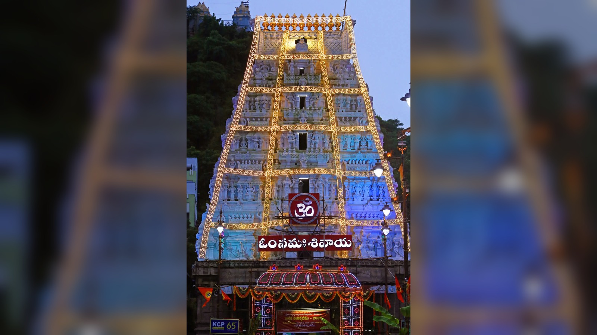
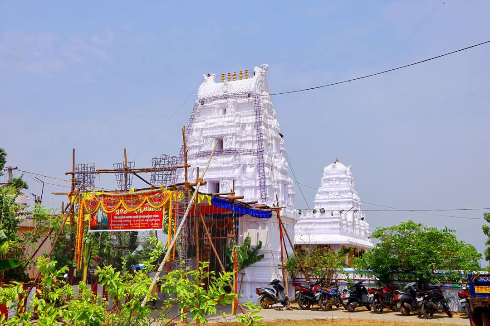
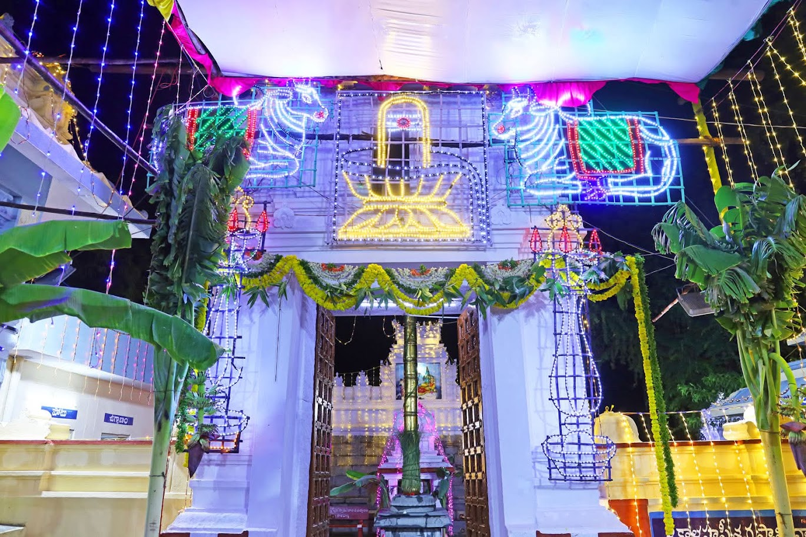

🛕 Sacred Temples
Discover sacred temples, ancient traditions and devotional places around Srikalahasthi.
🕉️ Sacred Places
Srikalahasthi is surrounded by many sacred temples that are connected with ancient traditions, devotion and spiritual heritage.

A sacred Shiva temple in Srikalahasthi, renowned for the worship of Lord Srikalahasteeswara Swamy and Sri Gnana Prasunambika Ammavaru.
Explore Temple
A sacred temple in Uranduru village associated with the spiritual heritage of the Srikalahasthi region.
🌸 Annual Brahmotsavams and special devotional celebrations are observed here.

📍 Uranduru Village
This temple is an Anubandha Alayam of Srikalahasthi Devasthanam.
According to local temple tradition, a devotee named Neelakantudu came from Kashi and attained moksha at this sacred place.
The Utsava Murthulu of Sri Gnana Prasunambika Sametha Sri Kalahasteeswara Swamy visit this temple once every year on the Arudra Nakshatram day following Ugadi.
Annual Brahmotsavams are celebrated every year during the Shravana Masam with special devotional programs and rituals.
On Kanuma festival, the Utsava Murthulu of Sri Annapurna Devi Sametha Sri Neelakanteswara Swamy Devasthanam from Uranduru participate in Kailasa Giripradakshina along with Sri Kalahasteeswara Swamy and Ammavaru.
📅 Temple Festivals
Annual Brahmotsavam celebrations with special sevas and devotional programs.
A special day of devotion and worship observed with traditional rituals.
A sacred month traditionally dedicated to devotional worship and special prayers.
Other important days and local temple celebrations are observed throughout the year.